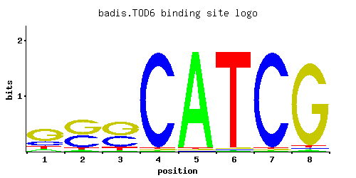
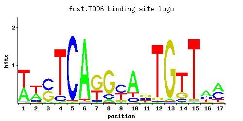
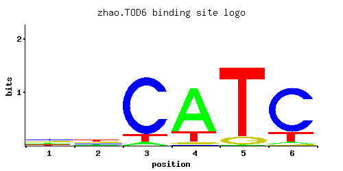

PAC motif binding protein involved in rRNA and ribosome biogenesis; subunit of the RPD3L histone deacetylase complex; Myb-like HTH transcription factor, similar to Dot6p; hypophosphorylated by rapamycin treatment in a Sch9p-dependent manne
01 / RECOMMENDED MATRIX
Best-performing DNA-binding model. Fisher’s P-value 0.01306
Information content 13.43
Max PWM score 12.53
Recommended cutoff 6.43
View and copy the recommended matrices ↘ Position frequency matrix (PFM) Copy
A | 0.65 0.07 0.02 0.01 0.01 0.96 0.01 0.01 0.05 0.14
C | 0.05 0.40 0.78 0.03 0.97 0.01 0.01 0.96 0.02 0.66
G | 0.10 0.44 0.19 0.05 0.01 0.01 0.02 0.01 0.87 0.19
T | 0.20 0.10 0.01 0.91 0.01 0.02 0.96 0.02 0.06 0.02
Position count matrix (PCM) Copy
A | 65 7 2 1 1 96 1 1 5 14
C | 5 40 78 3 97 1 1 96 2 66
G | 10 44 19 5 1 1 2 1 87 19
T | 20 10 1 91 1 2 96 2 6 2
Position weight matrix (PWM) Copy
A | 0.71 -1.52 -2.77 -3.47 -3.47 1.10 -3.47 -3.47 -1.86 -0.83
C | -1.28 0.80 1.47 -1.79 1.68 -2.89 -2.89 1.67 -2.20 1.30
G | -0.59 0.89 0.05 -1.28 -2.89 -2.89 -2.20 -2.89 1.58 0.05
T | -0.47 -1.16 -3.47 1.05 -3.47 -2.77 1.10 -2.77 -1.67 -2.77
02 / COMPARATIVE BENCHMARKS
Alternative candidate matrices 3 Historical matrix candidates from the original ScerTF database. Expand a source to inspect its original logo, scores, and matrix values.
TOD6 Badis et. al. P = 0.02187 View matrix ↘ 
Fisher’s P-value 0.02187
Information content 11.78
Max PWM score 10.4
Recommended cutoff 9.99
Position frequency matrix (PFM) Copy
A | 0.02 0.01 0.97 0.01 0.01 0.11 0.05 0.11
C | 0.94 0.01 0.01 0.01 0.01 0.48 0.50 0.58
G | 0.02 0.97 0.01 0.01 0.97 0.39 0.41 0.20
T | 0.02 0.01 0.01 0.97 0.01 0.02 0.05 0.11
Position count matrix (PCM) Copy
A | 2 1 97 1 1 11 5 11
C | 94 1 1 1 1 48 50 57
G | 2 97 1 1 97 39 41 20
T | 2 1 1 97 1 2 5 11
Position weight matrix (PWM) Copy
A | -2.77 -3.47 1.11 -3.47 -3.47 -1.07 -1.86 -1.07
C | 1.65 -2.89 -2.89 -2.89 -2.89 0.98 1.02 1.17
G | -2.20 1.68 -2.89 -2.89 1.68 0.77 0.82 0.11
T | -2.77 -3.47 -3.47 1.11 -3.47 -2.77 -1.86 -1.07
TOD6 Foat et. al. P = 1 View matrix ↘ 
Fisher’s P-value 1
Information content 15.98
Max PWM score 16.87
Recommended cutoff 12.65
Position frequency matrix (PFM) Copy
A | 0.13 0.12 0.95 0.68 0.01 0.91 0.20 0.14 0.36 0.02 0.33 0.03 0.01 0.88 0.01 0.47 0.56
C | 0.02 0.10 0.03 0.22 0.95 0.05 0.42 0.01 0.10 0.75 0.59 0.01 0.01 0.01 0.43 0.04 0.01
G | 0.42 0.29 0.01 0.10 0.01 0.02 0.28 0.14 0.49 0.14 0.07 0.01 0.97 0.10 0.49 0.12 0.02
T | 0.44 0.49 0.01 0.01 0.03 0.01 0.09 0.71 0.04 0.10 0.01 0.95 0.01 0.01 0.07 0.37 0.42
Position count matrix (PCM) Copy
A | 13 12 95 68 1 91 20 14 36 2 33 3 1 88 1 47 56
C | 2 10 3 22 95 5 42 1 10 75 59 1 1 1 43 4 1
G | 42 28 1 10 1 2 28 14 49 14 7 1 97 10 49 12 2
T | 44 49 1 1 3 1 9 71 4 10 1 95 1 1 7 37 42
Position weight matrix (PWM) Copy
A | -0.90 -0.98 1.09 0.75 -3.47 1.05 -0.47 -0.83 0.12 -2.77 0.03 -2.37 -3.47 1.01 -3.47 0.38 0.56
C | -2.20 -0.59 -1.79 0.20 1.66 -1.28 0.85 -2.89 -0.59 1.43 1.19 -2.89 -2.89 -2.89 0.87 -1.50 -2.89
G | 0.85 0.48 -2.89 -0.59 -2.89 -2.20 0.44 -0.25 1.00 -0.25 -0.94 -2.89 1.68 -0.59 1.00 -0.41 -2.20
T | 0.32 0.43 -3.47 -3.47 -2.37 -3.47 -1.27 0.80 -2.08 -1.16 -3.47 1.09 -3.47 -3.47 -1.52 0.15 0.27
TOD6 Zhao and Stormo P = 0.04576 View matrix ↘ 
Fisher’s P-value 0.04576
Information content 5.186
Max PWM score 5.96
Recommended cutoff 4.43
Position frequency matrix (PFM) Copy
A | 0.193 0.160 0.049 0.776 0.011 0.038
C | 0.348 0.222 0.851 0.010 0.001 0.788
G | 0.305 0.258 0.001 0.038 0.099 0.014
T | 0.155 0.359 0.099 0.177 0.888 0.161
Position count matrix (PCM) Copy
A | 19 16 4 77 1 3
C | 34 22 85 1 0 78
G | 30 25 0 3 9 1
T | 15 35 9 17 88 16
Position weight matrix (PWM) Copy
A | -0.51 -0.69 -1.88 0.89 -3.37 -2.13
C | 0.66 0.21 1.55 -2.89 -5.19 1.48
G | 0.53 0.36 -5.19 -1.56 -0.60 -2.55
T | -0.72 0.12 -1.17 -0.59 1.02 -0.69
03 / EXPERIMENTAL CONTEXT
Gene-level annotations and interactions. Genes bound in ChIP-chip experiments 1 genes No Data
Genes affected by TF deletion 1 genes No Data
Genes supported by both experiments 1 genes No Data
Predicted TF–TF partners 4 genes DOT6, EDS1, GCR2, STB3
Explore 4 original interaction plots →